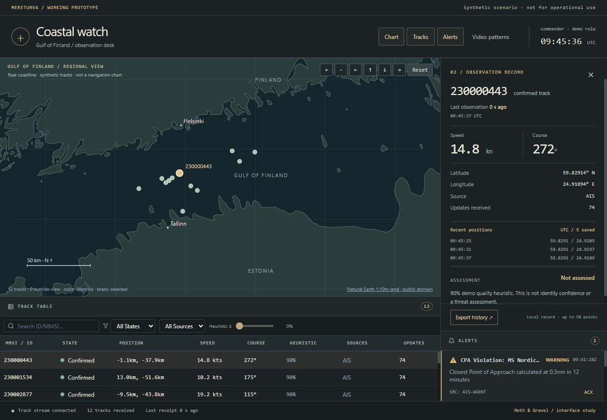
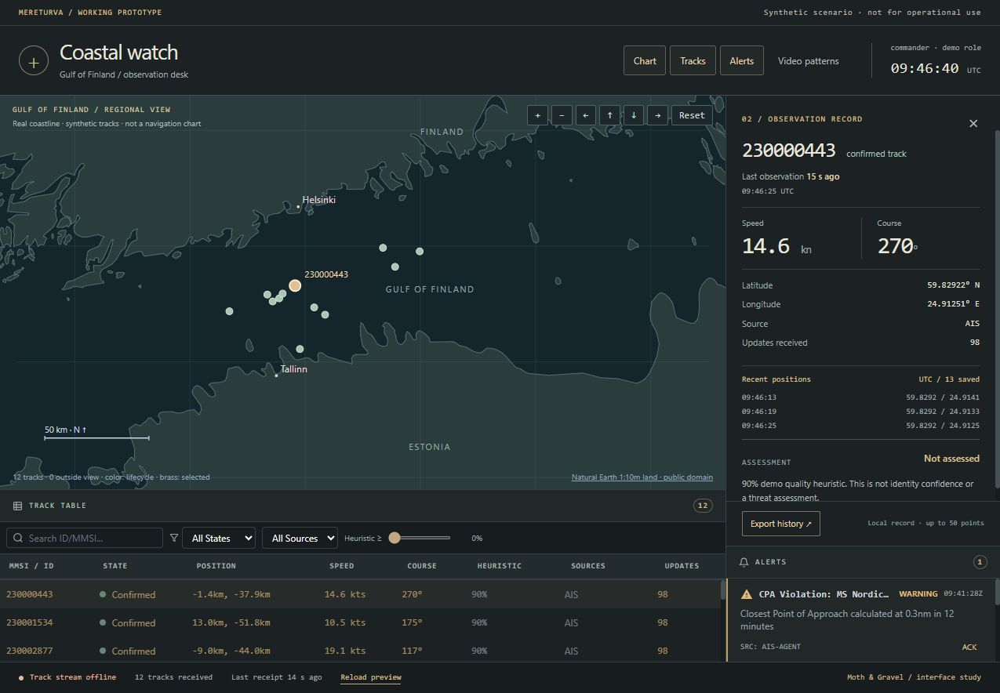

A PICTURE THAT CAN GROW OLD
The water
between updates.
A mark arrives on the chart. Another follows it. Soon, the picture begins to feel dependable.
Coastal watch is a working maritime interface. We are looking at the moment when that picture keeps its shape, but its evidence gets older.
Watch what remains
Real coastline. Synthetic tracks. These are captures of a working local prototype built from Raivari’s defense concept. The vessels and alert examples are simulated; this page carries no live feed.
01 / WATCH THE GAP
The stream stops.
The water stays.
Open a mark. Look closer. Then interrupt the connection. The last position remains on the chart, while the age beside it continues to grow.
Read the sequence
- A regional picture. Twelve synthetic tracks sit between the Finnish and Estonian coasts. The summary reports the received observations.
- One mark, opened. Selecting a track highlights it in brass and opens its record: source, observation age, position, movement and recent history.
- A closer look. The chart zooms into the coastline, then returns to the regional view. The selected record stays beside it.
- The feed is interrupted. The local server stops. The interface reports the lost connection, retains the last position and keeps counting its age. A reload action becomes available.
- PLACE
Give a mark somewhere to be.
A coastline makes the picture easier to read. It also makes it look more convincing. That is a reason to keep the source close.
- TIME
Let old information look old.
A position does not become current because the screen is still open. Its observation age belongs beside it, including when new messages stop arriving.
- JUDGEMENT
Leave room for what is missing.
A reported identifier and a quality figure cannot settle who a vessel is or what it intends. The record needs to show the limits of its account.
02 / KEEP THE RECORD CLOSE
One mark.
A few more questions.
The chart is the invitation to look. The record is where the small qualifications belong. Open either capture to inspect its labels at full resolution.




Look closer at the coastline

Open the working record
Captured on 15 October 2026 from a local build of Raivari, a private repository, branch codex/coastal-watch-specimen, revision 397a91e875aa942bdefb31dacb9c49099b0dc7fe. That revision was committed locally at capture time; the application source is not publicly available.
The coastline uses Natural Earth’s 1:10 million land geometry, released into the public domain. Vessel tracks are synthetic. Alert examples are static fixtures, independent of the moving tracks. This dashboard does not run the track-fusion pipeline; its quality figure is a demonstration heuristic.
The interruption was made by stopping the local server. Observation age and receipt age are separate. Reconnection in this prototype requires a reload and demo-role selection.
The four stills retain their original 1275 × 884 capture dimensions. The silent film was assembled from 634 browser captures, with 10.85 seconds of uncaptured gaps removed by direct cuts. Its interface clock can jump at those cuts. One pixel of padding makes the video compatible with H.264.
This is a working interface study. We have not established an operator comprehension result or operational validation. Read the media and source record ↗
THE NEXT OBSERVATION
What would you do
with this picture?
The useful next step is to put the interrupted view in front of someone else. Ask them what is known, what is old, and what they would need before acting.
If they read a retained position as a current one, the interface still has work to do. The age may be present. It may not yet be heard.
Bring a difficult signalAnother light, another question.
The connection came back. Did the picture? ↗